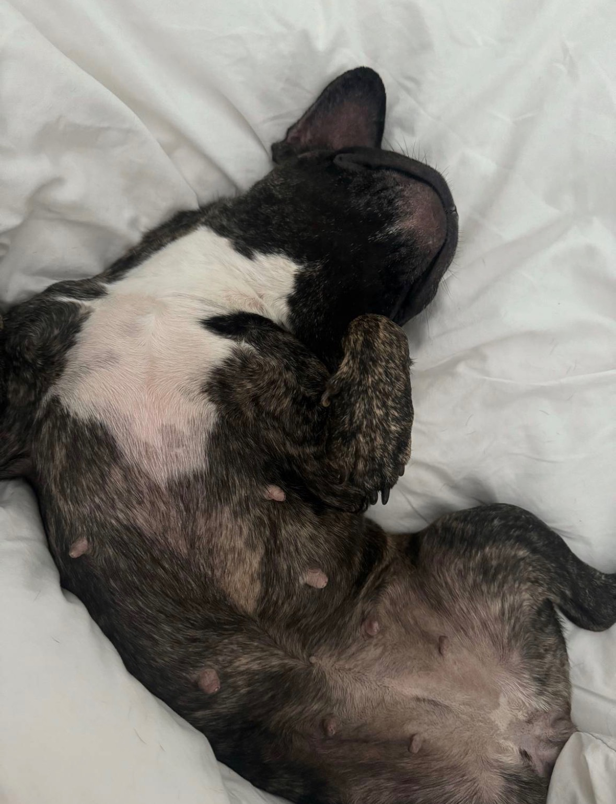
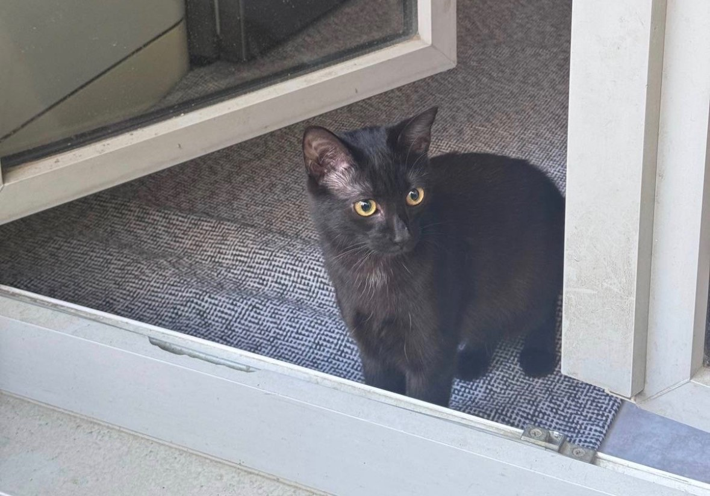
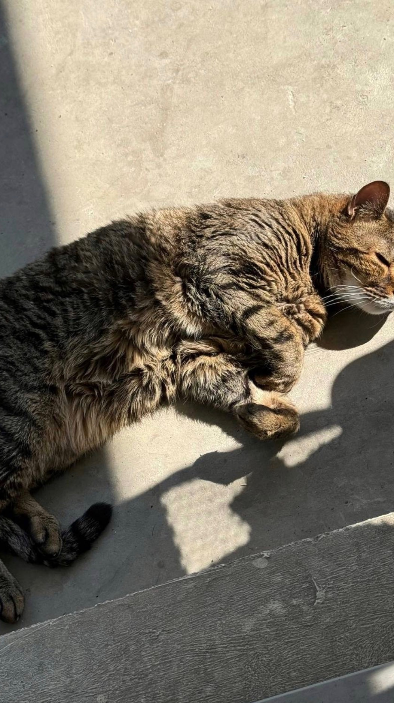
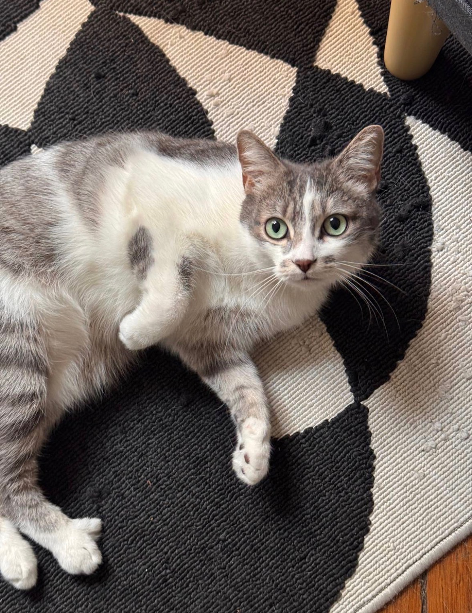
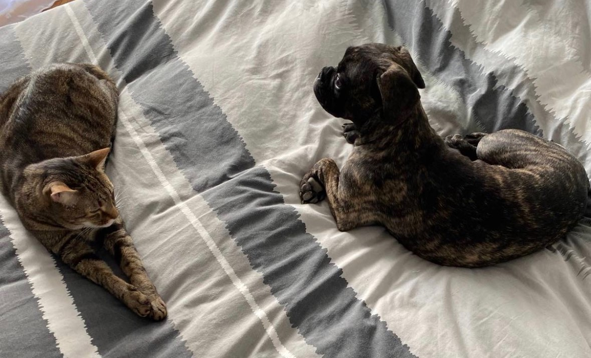
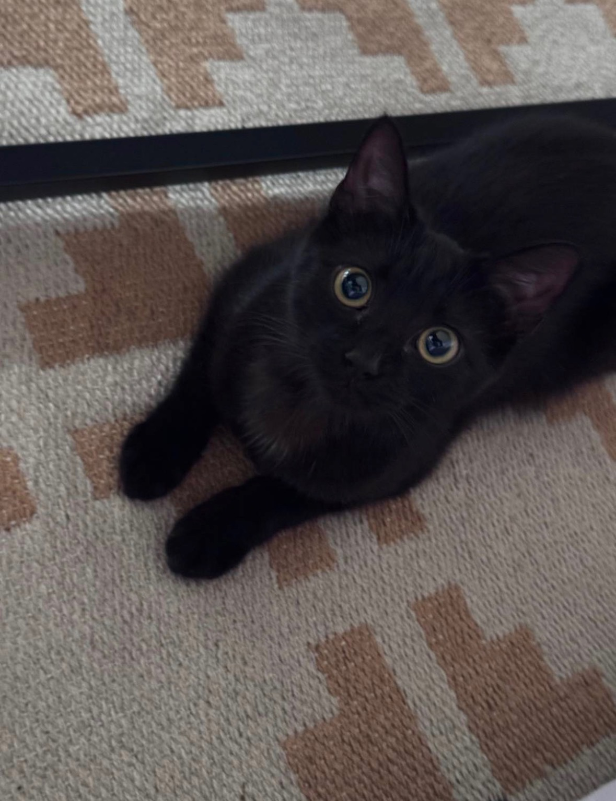
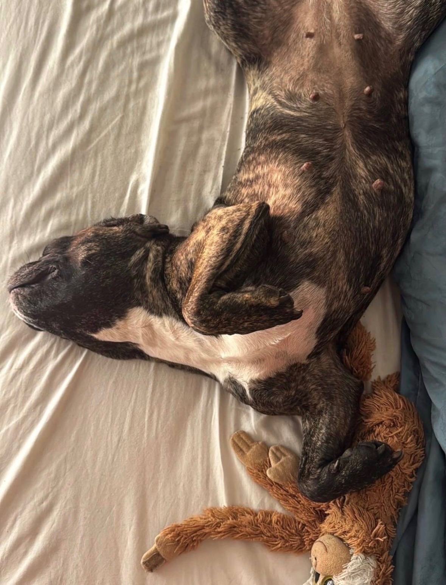
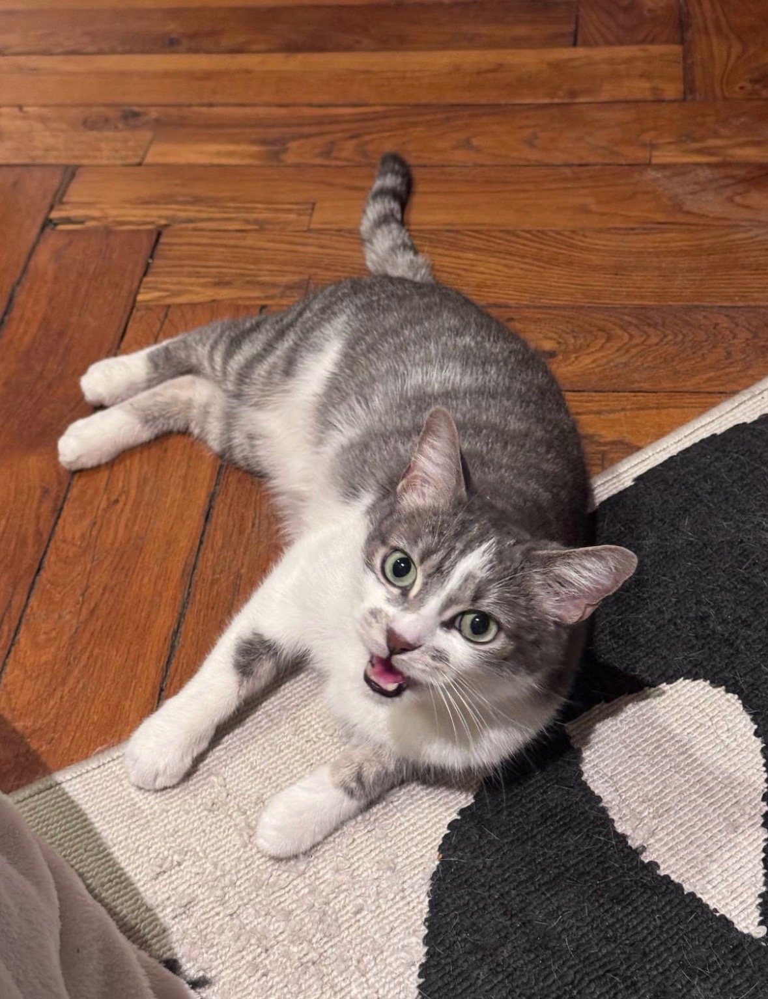
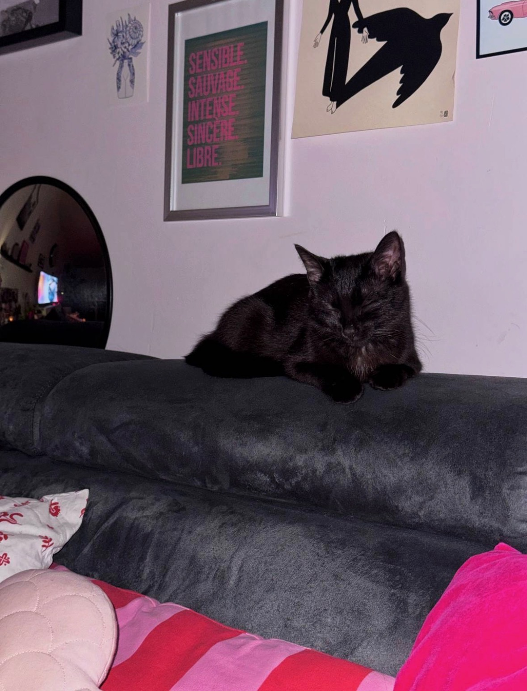

"Nous nous sommes rencontrés avec Vanessa lors de balade avec nos chiens respectifs ! Il n'aura pas fallu plus de temps pour que GreyBeard, mon husky, ai un coup de cœur pour sa gentillesse et sa douceur. Depuis, Vanessa est devenue mon contact numéro 1 pour les balades de GreyBeard lorsque je n'ai pas la possibilité de les faire. Autant lui que moi faisons confiance à Vanessa sans le moindre doute ! Je la recommande fortement !"
Présentation
À propos de moi
J'ai toujours grandi entourée de chats et j'en ai encore un à la maison, donc je connais très bien leurs petits "caprices", leurs heures de sieste sacrées et leurs regards qui disent "donne-moi à manger maintenant". Ils font partie de mon quotidien, ce qui me permet de comprendre leurs besoins, leurs habitudes et leur langage corporel. Il m'arrive également de garder les chats d'amis.
À chaque visite chez vous, je mets tout en œuvre pour que votre animal se sente serein et en confiance. Je respecte totalement ses repères et son petit univers, pour qu'il se sente comme si vous n'étiez jamais partis. Je m'adapte à sa personnalité, qu'il soit timide, turbulent ou ultra câlin, parce que chaque animal est unique et mérite une attention sur mesure. Et comme j'ai moi même un chien et un chat, vous pouvez partir l'esprit tranquille : votre compagnon sera entre de bonnes mains.
Confiance
30' - 1H
Visite à domicile
Chiens &
Chats
Visite à domicile.
Je me déplace chez vous pour prendre soin de votre animal pendant votre absence. Nourrissage, eau fraîche, nettoyage, moments de jeu et présence rassurante : tout est fait pour qu'il se sente en sécurité à Lyon et dans ses quartiers.
Chaque visite est personnalisée selon les habitudes de votre compagnon.
Demander
Chiens
Promenade sur mesure.
Des balades adaptées au rythme, à l'âge et aux habitudes de votre chien à Lyon : sortie courte, vraie promenade, dépense douce ou passage de confort. Disponible tous les jours de la semaine.
Réserver
30'Promenade
+ de 10
Années d'expérience
98%
Taux de satisfaction
12
Animaux gardés
"Vanessa prend soin de mon chien avec beaucoup de douceur et de professionnalisme. Les balades se passent très bien, mon chien est toujours heureux de la voir arriver. Je recommande sans hésitation pour toute garde ou promenade à Lyon !"
Lili B.
Promenade chien"Vanessa garde mon chat avec une attention et une tendresse remarquables. On repart en vacances l'esprit totalement tranquille. Elle envoie des nouvelles régulièrement, c'est vraiment rassurant. Une dog sitter à Lyon de confiance !"
Antoine M.
Garde de chat
Disponibilités
Visites à domicile & promenades à Lyon
Je me déplace autour de Lyon pour prendre soin de vos compagnons, que ce soit pour une visite à domicile ou une promenade régulière. Dog sitter disponible dans tous les arrondissements de Lyon.
Visites de chats à domicile
Lundi · Mardi · Jeudi · Vendredi
Promenades de chiens à Lyon
Tous les jours de la semaine

Galerie
Mes compagnons
Quelques moments partagés avec les animaux dont je m'occupe à Lyon









×

Demander une disponibilité
Expliquez votre besoin, vos dates et les habitudes de votre animal. Je vous répondrai rapidement.